BIOS611 Clustering Homework
Task 1 — Hypercube Clusters, K-means, and the Gap Statistic
Objective
Evaluate how accurately the Gap Statistic (with Tibshirani’s selection rule) recovers the true number of clusters in synthetic hypercube datasets as the inter-cluster separation (edge length L) decreases and the dimension n varies.
Data Generation
For each dimension ( n {6,5,4,3,2} ), we construct a hypercube in (^n) whose vertices are at coordinates ({0, L}^n). Each vertex is treated as a true cluster center. The true number of clusters is therefore (K_{} = 2^n). Around each center, we sample points from an isotropic Gaussian: [ X (, ^2 I_n), = 1.0, ] with 100 points per cluster. For each (n), we sweep the edge length (L) from 10 down to 1 (step 1), which gradually reduces inter-cluster separation.
Clustering + Model Selection
For each dataset ((n, L)), we run K-means with nstart = 20 and iter.max = 50. To estimate the number of clusters ( ), we apply the Gap Statistic (R cluster::clusGap) with: - Reference bootstrap samples: B = 50 (balanced for stability and runtime). - Upper cap for search: (K_{} = (2^n + 3, 12)).
Selection rule (Tibshirani et al.): choose the smallest (k) such that [ (k) (k+1) - (k+1). ]
Outputs
- Summary table:
results/tables/t1_gap_summary.csv(columns:n,side_length,K_true,k_hat, etc.). - Failure-point table:
results/tables/t1_failure_points.csv, which records for each dimension (n) the first edge length (L_{}) (scanning from large to small) where ( < K_{} ). - Figure:
results/figs/t1_gap_curve.pngshowing () versus (L), faceted by (n), with dashed horizontal lines at (K_{}) and a red dotted vertical line at (L_{}).
Results (Quick View)

Failure points per dimension
fail <- read.csv(“../results/tables/t1_failure_points.csv”) fail
Task 2 — Concentric Shells, Spectral Clustering, and the Gap Statistic
Idea in one breath
We now switch to concentric rings in 2D. Each ring is a true cluster (so the true cluster count is the number of shells). We gradually shrink the overall scale via the max radius (R), from 10 down to 1, and run spectral clustering (epsilon-neighborhood graph, (d_{}=1.0)) inside the Gap Statistic to estimate ().
What to look for
- Dashed horizontal line = true cluster count (number of shells).
- Red dotted vertical line = the first radius (R_{}) where we begin to underestimate (<K_{}).
- Red points = underestimates.

fail2 <- read.csv(“../results/tables/t2_failure_points.csv”) fail2 EOF
Task 2 — Failure Point Explained & Effect of d_threshold
What the failure point means as max_radius decreases
We place (n_{}) concentric rings in 2D; each ring is a true cluster. Their radii are (r_s = s ) for (s=1,,n_{}), so the radial gap between adjacent rings is (r = ). Spectral clustering builds an ()-neighborhood graph (connect two points if their distance < (d_{})). With small noise, same-ring points connect densely while different rings remain disconnected—if the gap is large.
As we decrease max_radius, the gap (r) shrinks. Sooner or later, due to radial jitter and angular differences, some cross-ring pairs fall within (d_{}). The graph starts to form bridges across rings; the Laplacian’s smallest eigenvectors then mix rings, and K-means on those eigenvectors merges clusters. That’s when the Gap+spectral pipeline begins to underestimate the true number of rings. The failure point (R_{}) in the plot is exactly the first max_radius (scanned from large to small) where the estimate () drops below the truth.
A rough mental model: [ r d_{} . ]
How changing (d_{}) shifts the failure point
- Smaller (d_{}=0.8) (sparser graph): harder to create accidental cross-ring edges; underestimation appears later.
⇒ (R_{}) moves down (you need a smaller max_radius before failure). - Larger (d_{}=1.2) (denser graph): easier to bridge adjacent rings; underestimation appears earlier.
⇒ (R_{}) moves up (failure at a larger max_radius).
Rule of thumb: [ R_{} ;; n_{} d_{} . ] So (R_{}) grows with (d_{}) and with stricter separation needs in higher noise or denser sampling.
Practical notes
- More noise or more points per ring → more chances of cross-ring neighbors → earlier failure (larger (R_{})).
- If rings are angularly clumped, local bridges form sooner.
- Tuning (d_{}) is key: too small fragments the graph; too large over-connects it.